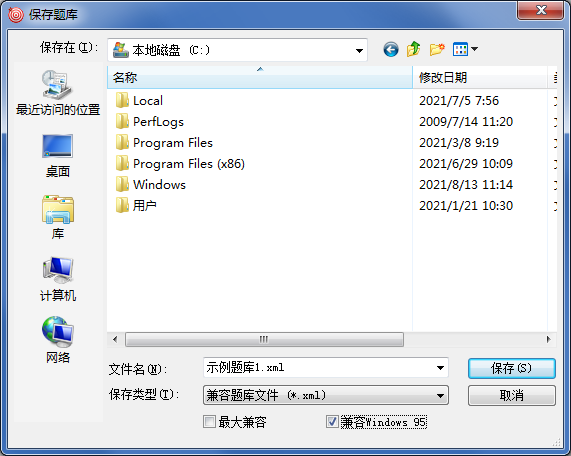

在旧版本系统上使用本程序
在旧版本系统上使用本程序
尽管您很可能正在使用Windows XP或者更新版本的操作系统，但QuickQuiz在某些旧操作系统（Windows 95/98）上仍然可以运行，但在使用中，您需要注意以下几个问题：
- 当您在Windows 95上使用本应用程序时，请选用MBCS版，经测试，在原生Windows 95操作系统下，Unicode版无法运行。
- 当您在Windows 98上使用本应用程序时，建议选用MBCS版，经测试，在原生Windows 98操作系统下执行Unicode版程序时，缺少mfc42u.dll，您可以自行下载mfc42u.dll至程序路径。
- 当您为运行于Windows 95上的QuickQuiz制作题库时，建议您保存为兼容题库文件，并勾选“兼容Windows 95”选项；您也可以保存为“适用于1.x版本的题库文件”，但这会丢失题库封面，题目图像等信息；您无法在Windows 95操作系统下存取标准题库文件（*.qux）。

 | 当勾选“兼容Windows 95”时，保存的题库将失去最大的兼容性，很可能无法在使用其它语言的操作系统上读取或正确显示，若非必要，请勿勾选此选项。 |
|---|
- 在Windows 98及更新操作系统上，保存兼容题库文件时均默认不兼容Windows 95，若您需要兼容Windows 95，请使用“另存为”。
GX Software 2020-2021
V2.0